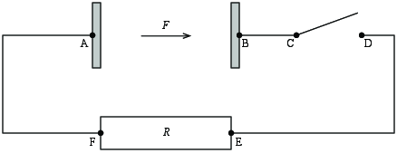

Figuren viser en krets som består av en smart kondensator samt en motstand og en bryter. Den smarte kondensatoren er laget som en platenkondensator, som vist, med en avstand \( L \) mellom platene. Men i tillegg virker det en ytre kraft \( F=f\cdot q \) (hvor \( f \) er en gitt konstant) på positive ladninger med ladning \( q \) i området mellom de to platene. Du kan anta at på den venstre platen i kondensatoren frigjøres det positive ladninger som kan flyttes over gapet mellom de to platene til den høyre siden.

a) Forklar hva som skjer når man skrur på den smarte kondensatoren slik at kraften \( F \) begynner å virke.
Positive ladninger vil bevege seg fra den venstre til den høyre siden av kondensatoren slik at det blir positiv ladning på høyre side og negativ ladning på venstre side av kondensatoren.
Etter en lang tid når systemet en stasjonær tilstand.
b) Hva blir det elektriske feltet i kondensatoren da?
\( E = F/q = f \).
c) Hva blir det elektriske potensialet i punktene A-F?
\( V_A = 0 \), \( V_B = fL \), \( V_C = V_B \), \( V_D = V_A = 0 \), \( V_E = V_A = 0 \), \( V_F = V_A = 0 \)
d) Hva er \( \oint_C \vec{E} \cdot \d \vec{l} \) langs kretsen?
\( \oint_C \vec{E} \cdot \d \vec{l} = 0 \).
e) Hva er spenningsfallet over kondensatoren?
Det er en spenningsøking på \( fL \) over kondensatoren slik at spenningsfallet er \( -fL \).
f) Hva blir spenningsfallet over bryteren - altså mellom den venstre og den høyre tilkoblingen til bryteren?
Spenningsfallet er \( fL \).
g) Hva blir spenningene i punktene A-F nå?
h) Hva er \( \oint_C \vec{E} \cdot \d \vec{l} \) langs kretsen?
0
i) Hva blir emf'en, \( e \) i denne kretsen?
\( e = fL \)
j) Hva blir strømmen \( I \) i kretsen?
\( I = fL/R \)